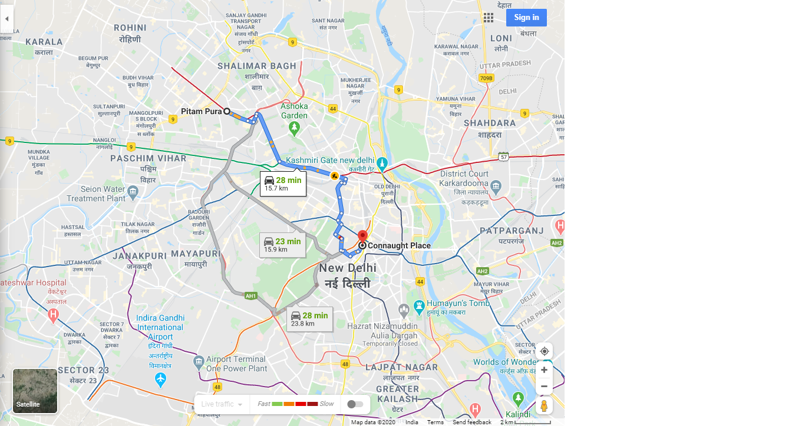

Route 2 : Via Vir Banda Bairagi Marg
ETA - 28 min typically
Distance - 15.7 km
 Summary : without traffic
- Take Lala Jagat Narayan Marg, महाराजा नाहर सिंह मार्ग, Vir Banda Bairagi Marg and Rani Jhansi Rd to Peshwa Rd in Gole Market, New Delhi
35 min (12.9 km)
- Head southeast on Lala Jagat Narayan Marg toward Vaishali Rd
1.3 km
Pass by Tower Apartments (on the left in 850 m)
- Use any lane to turn left onto Mahatma Gandhi Marg/Ring Rd
400 m
- Take the exit toward महाराजा नाहर सिंह मार्ग
130 m
- Turn right onto महाराजा नाहर सिंह मार्ग
3.1 km
Pass by Metro Pillar Number 223 (on the right in 2.4 km)
- Turn left onto Vir Banda Bairagi Marg
3.3 km
Pass by Metro Pillar Number 192 (on the left in 400 m)
- Continue onto Ram Bagh Rd
650 m
- Turn right onto Rani Jhansi Rd
260 m
- Turn right to stay on Rani Jhansi Rd
170 m
- At the roundabout, take the 2nd exit and stay on Rani Jhansi Rd
950 m
- Continue onto Rani Jhansi Rd
950 m
Pass by Kukreja House (on the left in 500 m)
- At the roundabout, take the 2nd exit and stay on Rani Jhansi Rd
450 m
- At Veer Chand Singh Garhwali Chowk, take the 1st exit onto Panchkuian Marg
300 m
- Turn right after Delhi Heart & Lung Institute (on the left)
700 m
- Take Bhai Vir Singh Marg to Ashoka Rd in Sector 4
3 min (1.2 km)
- Turn left onto Peshwa Rd
400 m
- At Gole Market Chowk, take the 3rd exit onto Bhai Vir Singh Marg
750 m
Pass by Giani Ice Cream (on the left)
- Turn left onto Kali Bari Marg
100 m
- Continue on Ashoka Rd. Take Jai Singh Marg to Sansad Marg in Hanuman Road Area
4 min (1.6 km)
- At Gol Dak Khana Roundabout, take the 3rd exit onto Ashoka Rd
600 m
- Turn left onto Jai Singh Marg
550 m
- Turn left onto Sansad Marg
450 m
Pass by Pind Balluchi Connaught Place Delhi (on the left in 450 m)